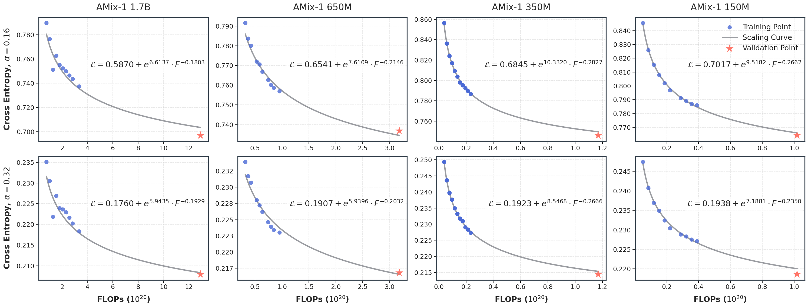
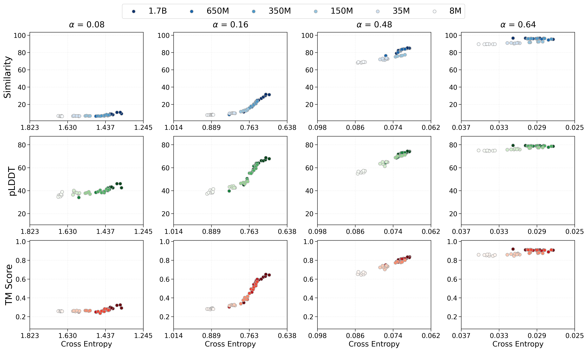
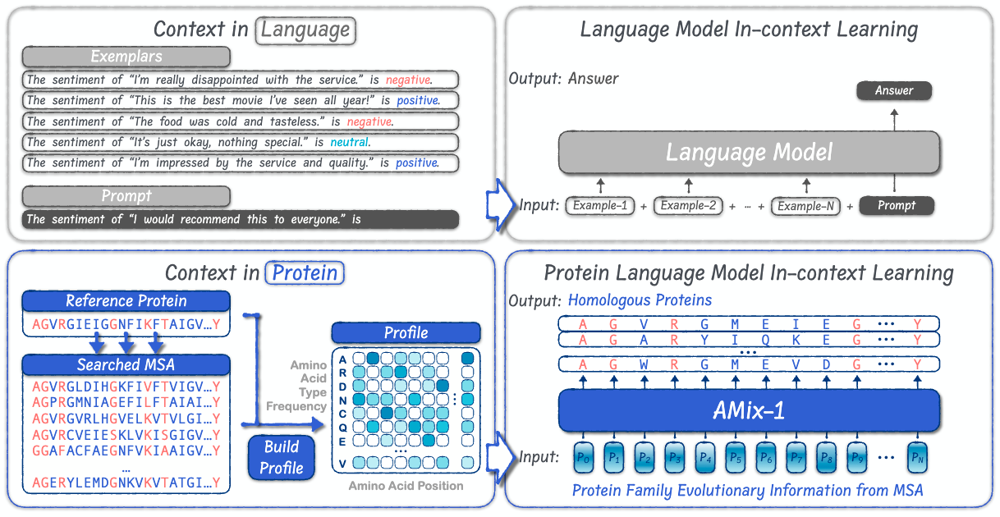
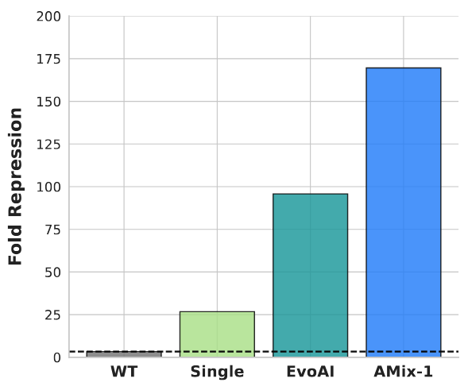
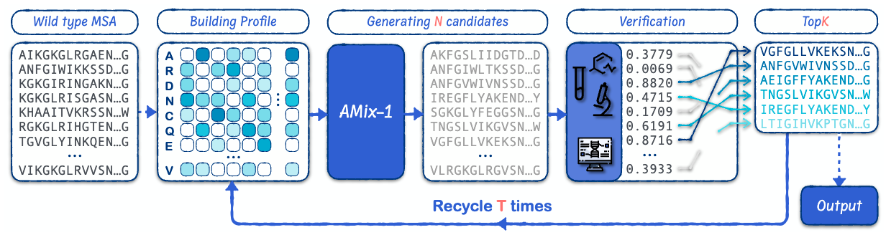
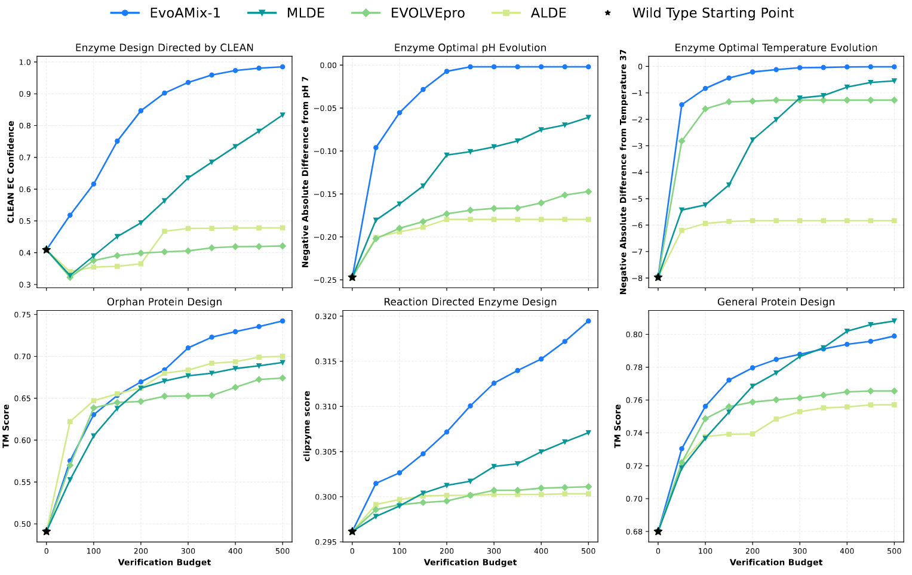

Overview
We introduce AMix-1, a powerful protein foundation model built on Bayesian Flow Networks and empowered by a systematic training methodology, encompassing pretraining scaling laws, emergent capability analysis, in-context learning strategy, and test-time scaling algorithm. To guarantee robust scalability, we establish a predictive, noise-aware scaling law and reveal the progressive emergence of structural understanding from the loss perspective, culminating in a strong 1.7-billion-parameter model. Building on this foundation, we devise a multiple sequence alignment (MSA)-based in-context learning strategy to unify protein design into a general framework, where AMix-1 recognizes deep evolutionary signals among MSAs and consistently generates structurally and functionally coherent proteins. This framework enables the successful design of a dramatically improved AmeR variant with an up to 50× activity increase over its wild type. Pushing the boundaries of protein engineering, we further empower AMix-1 with an evolutionary test-time scaling algorithm for in silico directed evolution that delivers substantial, scalable performance gains as verification budgets increase, laying the groundwork for next-generation lab-in-the-loop protein design.
Scaling Law
We are the first to characterize scaling laws and emergent abilities for an advanced generative model, namely the Bayesian Flow Network, and pretrain a family of AMix-1 models scaling from 8 million to 1.7 billion parameters. The following figures illustrate scaling laws of cross-entropy and training FLOPs across various model sizes and noise levels α. We show the relationship between loss L and FLOPs F, indicating that the AMix-1 models follow predictive scaling laws.

Emergent Ability
AMix-1 models exhibit emergent abilities across different noise levels α, with clear emergence observed at α = 0.16 and 0.32. In the figure, darker colors represent models with more parameters. As model size increases, cross-entropy decreases and downstream performance correspondingly improves.

In-Context Learning
We establish a unified protein design framework leveraging AMix-1's in-context learning ability and evolutionary signals in multiple sequence alignments for novel structure- and function-preserving generation. The following figure illustrates the comparison of standard LLM in-context learning (top) with protein family conditioning via MSA profiles in AMix-1 (bottom). In LLM ICL, few-shot exemplars are token-level demonstrations; in AMix-1, the MSA profile serves as a dense, position-wise family prompt.

We design a high-activity AmeR variant with a 50× improvement over the wild type, showcasing AMix-1's real-world impact on functional protein engineering. Specifically, we used AMix-1 to generate 40 candidate protein sequences, each containing no more than ten mutations. The functional activity of these variants was measured using a fluorescent reporter assay, where higher DNA-binding affinity leads to stronger repression of a fluorescent protein, quantified as "fold repression". A higher fold repression value indicates better function. AMix-1's performance was compared to three baselines: Wild-Type (WT), a single-mutant library, and EvoAI, a state-of-the-art directed evolution method. The wet-lab comparison below shows the wet-lab verification process guided iteratively by AMix-1.

Test-Time Scaling
With the in-context learning ability of AMix-1, we push this capacity even further by introducing a novel evolutionary test-time scaling algorithm that uses AMix-1 as the proposer and an external plug-and-play verifier to generate candidate sequences from evolutionary constraints, achieving directed protein evolution through arbitrary in silico verifiers or experimental screening.


Conclusion
AMix-1 brings together scaling laws, emergent capabilities, in-context learning, and test-time scaling in a 1.7B-parameter protein foundation model built on Bayesian Flow Networks. Guided by multiple sequence alignments, it generates novel proteins that preserve structural similarity, with wet-lab validation demonstrating improved AmeR activity. Its evolutionary test-time scaling algorithm further supports directed evolution across diverse computational objectives, laying the groundwork for future lab-in-the-loop protein design.